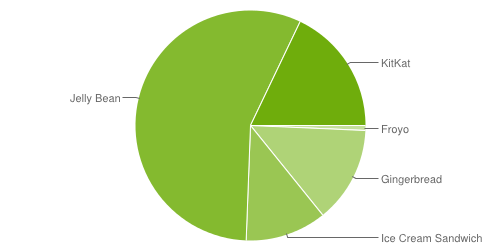

State of the Mobile Web 2014
Joe Bowser
Apache Cordova: Past, Present, Future
Apache Cordova
Build apps with HTML, CSS, and JavaScript.
PhoneGap
Cross-Platform Mobile Development
Access to Device APIs by plugin
- Minimal set of supported APIs
- Large set of community APIs
- Can be found at plugins.cordova.io
Helps put your app in the store! (No guarantees)


Who does Cordova dev?


How to contribute?
More on our wiki.The Story of Cordova...
"The goal of PhoneGap is to cease to exist"
2008 - Beer Nerds <3 Mobile Web
iPhone SDK, Blackberry 4.2, & Android 1.0
2009 - iOS was the priority
Oh you do Android, why?!?
2010 - Getting Contributors
Big Blue and PhoneGap/Build.
2011 - Growing Pain
1.0, Adobe, and Apache.
2012 - Cadence Realized
2.0, and 1 million downloads.
2013 - Optionally Opinionated
3.0 w/ over 2 million downloads.
2014?
OMG CLIFFHANGER.
Real talk.
Is it possible to quickly build a FAST app using HTML, CSS, and JavaScript?
Yes!
Is it possible to quickly build a FAST app using HTML, CSS, and JavaScript that has a consistent look and feel and works properly across devices?
Yes, but it takes work!
Android WebView
"The IE6 of Mobile Development"
Things outside our control:
- Rendering issues (Media queries)
- iFrame support breaking
- Support for Android Resources and Android Assets
- URI encoding bugs
- Browser History Bugs
- Text-Field Issues
Targeting Android
 http://developer.android.com/about/dashboards/index.htmlHistory of this issue:
- Six years of errors
- Weird Android bugs with various frameworks
- Performance issues on Android
- Bugs left as "Won't Fix" without any options for the user
Third Party WebView
Use third party webviews your apps.
Installable via a plugin
plugman install crosswalk
DEMO TIME - WebGL
DEMO TIME - Chrome Debugging
Real Talk
- Makes the app a lot bigger
- Instead of Android WebView bugs, you have third-party bugs
- Third-Party WebView may not start as fast as Android WebView
- This is solving minor problems with a sledgehammer
Having a sledgehammer is better than having no tool at all
Availability:
- Currently lives on a dev branch of Cordova
- Currently only has Crosswalk as a third-party webview
- Hope to have Mozilla GeckoView soon
- Support for WebViews will land in Cordova 4.0
To summarize
- In 2014, the Web still isn't a first class platform on mobile
- Apache Cordova can make web apps first class citizens
- More tools are existing for hybrid apps
- Third Party Webviews are going to be awesome